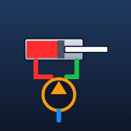

Formation mécanicien — circuit de base : pompe, limiteur de pression, distributeur 4/3, vérin double effet.
📱 Sur iPhone / iPad : dans Safari, touchez Partager (carré avec une flèche ⬆️) puis « Sur l'écran d'accueil ». L'application s'ouvrira alors en plein écran, comme une appli, et fonctionnera hors connexion.
Gestes : 1 doigt = tourner · 2 doigts = zoomer / déplacer · toucher un composant = sa fiche.
Fonctionne hors connexion après la première ouverture.
Activez une panne et observez les symptômes sur le banc (bruit, vitesse, manomètre, fuite…).
Une panne est activée au hasard. Observez le banc, puis faites votre diagnostic.
Les conduites changent de couleur en direct. La case jaune du distributeur est la position active.
Zéro à 12 h, puis les deux arbres sont tournés ensemble : 3 h (côté opérateur), 6 h, 9 h. Lectures en mm.
| 12 h | 3 h | 6 h | 9 h | |
|---|---|---|---|---|
| Radial | — | — | — | — |
| Face | — | — | — | — |
Tolérances à 1500 tr/min : décalage ≤ 0,10 mm · angulaire ≤ 0,08 mm / 100 mm.
Consignez la machine pour pouvoir caler et déplacer le moteur.
Activez une panne puis observez : vibrations, intensité, températures, bruit, comportement de l'accouplement…
Une panne est activée au hasard, moteur en marche. Observez les mesures et le banc, puis faites votre diagnostic.
Votre navigateur ne prend pas en charge WebGL ou il est désactivé. Essayez avec Chrome à jour.